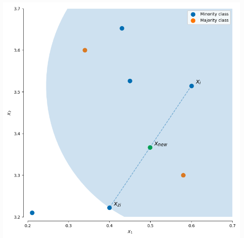
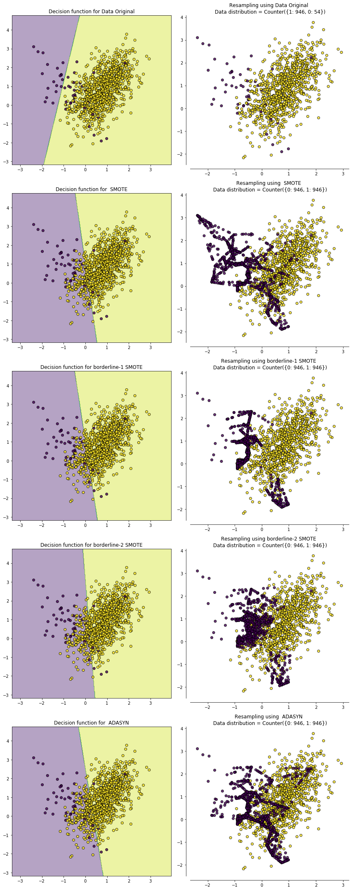
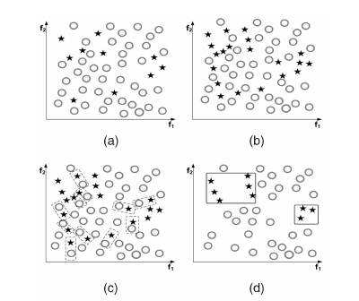

过采样
随机过采样
从样本少的类别中随机抽样，再将抽样得来的样本添加到数据集中。然而这种方法如今已经不大使用了，因为重复采样往往会导致严重的过拟合。
SMOTE
SMOTE (synthetic minority oversampling technique) 的思想概括起来就是在少数类样本之间进行插值来产生额外的样本。具体地，对于一个少数类样本xi使用K近邻法(k值需要提前指定)，求出离xi距离最近的k个少数类样本，其中距离定义为样本之间n维特征空间的欧氏距离。然后从k个近邻点中随机选取一个，使用下列公式生成新样本：
其中$\hat{x}$为选出的k邻近点，$\delta \in[0,1]$是一个随机数。

SMOTE会随机选取少数类样本用以合成新样本，而不考虑周边样本的情况，这样容易带来两个问题：
- 如果选取的少数样本周围仍然是一些少数样本，那么新合成的样本也不会提供太多有用信息
- 如果选取的少数样本的周围都是多数类样本，那么这个被选中的少数样本可能本来就是噪音，而新生成的样本会与周围的多数类样本产生重叠，导致分类困难。
Border-line SMOTE
我们希望新合成的少数类样本处于两个类别的边界，这样能够提供更多的有用信息用于分类，而前面的SMOTE是从全部少数类样本中随机选择一些来生成新样本，而Border-line SMOTE则对少数类样本的选择进行了优化。
Border-line SMOTE首先会把所有少数类样本分为三类：
- noise ： 所有的k近邻个样本都属于多数类
- danger ： 超过一半的k近邻样本属于多数类
- safe：超过一半的k近邻样本属于少数类
这种改进算法只会从处于danger的少数样本中随机选择，然后使用基本SMOTE算法生成新的样本，因为处于danger的样本都处于分类的边界，因此能提供更多的信息用于分类。
Border-line SMOTE 分为两种: Borderline-1 SMOTE 和 Borderline-2 SMOTE。 Borderline-1 SMOTE 在合成样本时(1.1)式中的$\hat{x}$是一个少数类样本，而 Borderline-2 SMOTE 中的$\hat{x}$则是k近邻中的任意一个样本。
ADASYN
ADASYN名为自适应合成抽样(adaptive synthetic sampling), 这是一个用来决定每个少数类样本应该生成多少个新样本（SMOTE对每个少数类样本生成同样多的新样本），算法如下：
- 计算需要合成的样本总量：
其中$S_{maj}$为多数类样本的数量，$S_{min}$为少数类样本的数量，$\beta \in[0,1]$
- 对于每个少数类别样本$x_{i}$，找出其K个邻近点，并计算
其中$\Delta_{i}$为K个邻近点中多数类样本的数量，Z为规范化因子。也就是说一个少数类样本周围的多数类样本越多，$\gamma_{i}$越大
- 最后计算每个少数类样本需要合成的样本数量$g_{i}$：
可以看到ADASYN利用分布Γ来自动决定每个少数类样本所需要合成的样本数量，这等于是给每个少数类样本施加了一个权重，周围的多数类样本越多则权重越高。但是这样似乎抗噪音的性能不强，一个少数类样本周围多是多数类样本的话，这个少数类样本很可能是噪音，而这样一个噪音的权重却特别大，生成很多新的样本。

可以看到过采样后原来少数类的决策边界都扩大了，导致更多的多数类样本被划为少数类了
欠采样
随机欠采样
类似与随机过采样，就是从多数类样本中随机抛弃一些样本。这种方法的缺点很明显，就是会缺失一些数据的信息。
EasyEnsemble
这种方法将多数类样本分为n个子集，每个子集的样本数量都和少数类样本数量相等。然后将每个子集和少数类样本两两组合去训练一个模型，最后将n个模型集合（类似于bagging？），这样集成后就总的信息量就不会减少。
BalanceCascade
这种方法有点类似与boosting。第n轮训练的时候，从多数类样本中随机抽取并与少数类样本组合去训练模型，完成后把可以被这一轮模型正确分类的多数类样本剔除，在第n+1轮中从剔除完毕的多数类样本中再随机抽取，如此往复。最后再将n个模型组合成强学习器。
Near miss
即从多数类样本中选取最具代表性的样本用于训练，主要是为了缓解随机欠采样中的信息丢失问题。NearMiss采用一些启发式的规则来选择样本，根据规则的不同可分为3类：
- NearMiss-1：选择到最近的K个少数类样本平均距离最近的多数类样本
- NearMiss-2：选择到最远的K个少数类样本平均距离最近的多数类样本
- NearMiss-3：对于每个少数类样本选择K个最近的多数类样本，目的是保证每个少数类样本都被多数类样本包围
NearMiss-1和NearMiss-2的计算开销很大，因为需要计算每个多类别样本的K近邻点。NearMiss-1易受离群点的影响。
数据清洗方法
Tomek Link
Tomek Link表示不同类别之间距离最近的一对样本，即这两个样本互为最近邻且分属不同类别。这样如果两个样本形成了一个Tomek Link，则要么其中一个是噪音，要么两个样本都在边界附近。这样通过移除Tomek Link就能“清洗掉”类间重叠样本，使得互为最近邻的样本皆属于同一类别，从而能更好地进行分类。

Edited Nearest Neighbours(ENN)
对于属于多数类的一个样本，如果其K个近邻点有超过一半都不属于多数类，则这个样本会被剔除。这个方法的另一个变种是所有的K个近邻点都不属于多数类，则这个样本会被剔除。